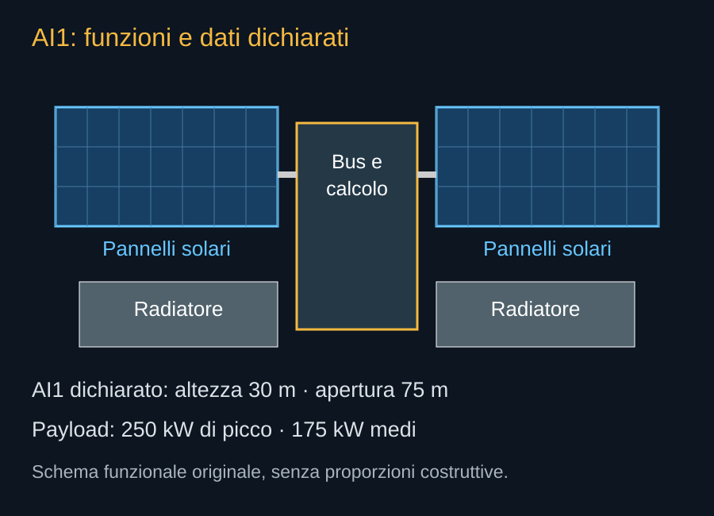

AI1 va letto a partire dalle funzioni. Il bus tiene insieme il veicolo, conosce la sua posizione e il suo orientamento, gestisce l’energia e permette le manovre. Il payload esegue il lavoro informatico. I pannelli raccolgono luce. Il sistema termico trasferisce ed espelle il calore. Le comunicazioni collegano queste macchine ai clienti e agli altri satelliti. Se una funzione resta insufficiente, la potenza delle altre non può compensarla indefinitamente.


La scheda corrente
| Parametro | Valore | Come leggerlo |
|---|---|---|
| Altezza dispiegata | 30 m | Ingombro dichiarato; non dimensione del carico ripiegato. |
| Apertura | 75 m | Dimensione dispiegata; non larghezza della carenatura necessaria. |
| Potenza payload, picco | Fino a 250 kW | Potenza elettrica, non prestazione in operazioni al secondo. |
| Potenza payload, media | 175 kW | Obiettivo dichiarato, non media misurata durante una missione. |
| Rapporto dichiarato | 75 kW/t | La scheda non chiarisce completamente numeratore, massa di riferimento e condizioni. |
Questi dati descrivono una configurazione proposta. Non costituiscono una scheda di accettazione di un satellite già qualificato. L’apertura dà un’idea della scala meccanica; i kilowatt danno un’idea della richiesta elettrica e del calore da gestire. Per conoscere quante richieste di un modello possa servire il nodo occorrono altri dati: processori, memoria, precisione numerica, software e carico di lavoro.
Picco, media e margine
La potenza di picco indica una condizione più gravosa che può essere sostenibile solo per un certo tempo o entro un certo profilo. La potenza media deve essere collegata a una finestra di osservazione e a un’attività. Non possiamo ricavare dalla sola scheda quanto duri il picco o quale carico lo produca. Possiamo comprendere la conseguenza progettuale: alimentazione e raffreddamento devono essere valutati anche nei transitori.
Un esempio didattico mostra la differenza. Se un apparato producesse 75 kW di calore in più della capacità di smaltimento per dieci minuti, accumulerebbe 45 megajoule. La massa termica potrebbe rallentare l’aumento di temperatura, ma quell’energia dovrebbe poi essere espulsa. Non è un calcolo del comportamento AI1; è il motivo per cui una media favorevole non autorizza a ignorare le punte.
Gli inviluppi della risposta FCC
A pagina 8 del documento di settembre SpaceX indica valori limite: area solare inferiore a 1.500 m², area dei radiatori inferiore a 200 m², area del bus inferiore a 21 m² e massa inferiore a 4.000 kg. Sono inviluppi per l’analisi del sistema, non una distinta definitiva. Il documento usa anche una sezione media di un veicolo in rotazione incontrollata per valutare il decadimento: una grandezza diversa dalla superficie radiativa.
La distinzione conta. Un pannello può avere due facce radianti, essere inclinato rispetto a un flusso o essere parzialmente coperto. La superficie geometrica, l’area proiettata e l’area efficace nello scambio termico possono assumere valori differenti. Confrontarle senza definizioni produrrebbe contraddizioni apparenti o un dimensionamento inventato.
Un progetto aggiornabile
Le descrizioni iniziali di un veicolo possono cambiare mentre componenti, fornitori e prove maturano. Il libro conserva la data di questa scheda e il documento dal quale ricava ciascuna cifra. Un aggiornamento futuro dovrà sostituire i dati in modo coerente, mantenendo riconoscibile il passaggio di generazione. Mescolare la potenza di una versione con la massa o i radiatori di un’altra impedirebbe di comprendere il vero sviluppo del satellite.
Fonti pubbliche e tracce
- SpaceX, Starmind e scheda AI1. Consultata il 10 ottobre 2026. Fonte aziendale per la scheda corrente e gli obiettivi Gigasat; non rapporto di prove in volo.
- SpaceX, risposta alla FCC datata 16 settembre 2026. Documento primario scaricato e letto. Incontro del 14 settembre; inviluppi a pagina 8, rientro a pagina 9. Dichiarazioni e modelli del richiedente, non decisione della FCC.
- NVIDIA, SpaceXAI e prima generazione Starmind. 24 agosto 2026. Conferma l’adattamento di Vera Rubin NVL72; non pubblica una distinta completa del satellite.